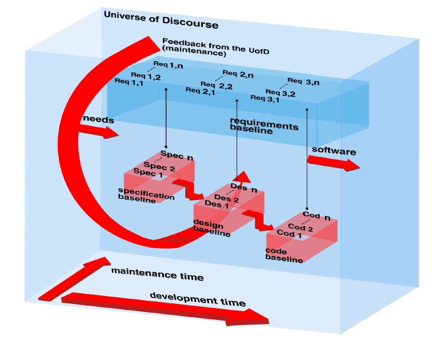
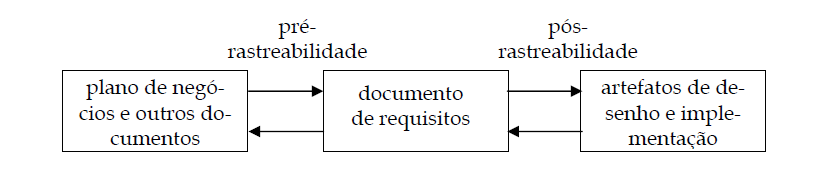
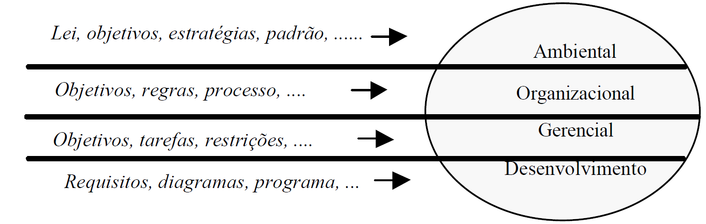
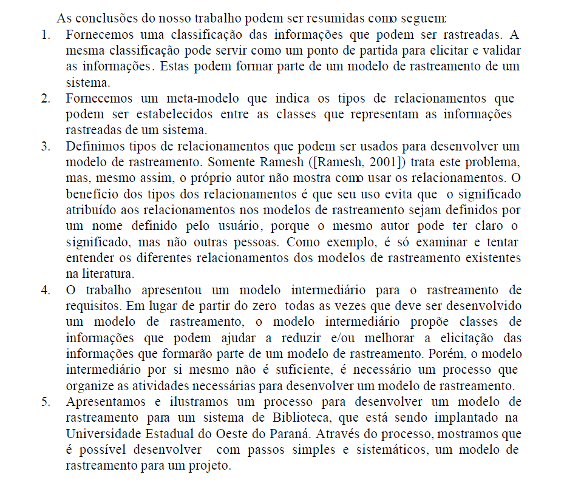

Pós-Rastreabilidade
Tabela 1 - Funções dos autores no artefato
| Nome | Função |
|---|---|
| Amanda Cruz | Rastreabilidade dos requisitos não-funcionais 03 ao 16 |
| João Pedro Costa | Criação do documento; Desenvolvimento da pós-rastreabilidade; Modelagem e configuração das tabelas; Desenvolvimento da introdução e metodologia; Adição de todos os requisitos do projeto; Adição dos hyperlinks; Inserção de informação de RF1 a 40 e parcial de RNF 1 a 18; Revisão Parcial |
| Ryan Salles | Revisão geral, Inserção de informação RF1-14 e RNF 17 e 18 |
| Julia Gabriela | Revisão geral |
| João Igor | Alocação da rastreabilidade dos requisitos 15, 16 e 19 ao 28 |
| Gabriel Flores | Rastreabilidade dos requisitos funcionais 29 ao 40 e não funcionais 1 e 2 |
Autor(es): João Pedro Costa
Introdução
Este documento tem como objetivo apresentar a rastreabilidade entre os requisitos elicitados do Cadastro Único e os principais artefatos desenvolvidos ao longo do projeto, como diagramas, cenários, casos de uso, léxicos, protótipos e outros documentos presentes na pasta docs/. A rastreabilidade permite visualizar como cada requisito está relacionado aos artefatos de análise e projeto, facilitando a verificação, validação e manutenção do sistema.
Metodologia
A metodologia utilizada para rastreabilidade foi baseada em modelos clássicos de pós-rastreabilidade, adaptando-os ao contexto do projeto. Os elos de rastreabilidade considerados são:
- Satisfação: artefatos que comprovam o atendimento ao requisito.
- Recurso: artefatos que fornecem informações ou contexto para o requisito.
- Representação: artefatos que ilustram ou detalham o requisito.
- Alocado: artefatos nos quais o requisito está explicitamente tratado.
- Agregação: agrupamento de requisitos ou artefatos relacionados.
A tabela a seguir apresenta um template utilizado para a pós-rastreabilidade dos requisitos:
Tabela 2 - Template Pós-Rastreabilidade
| Artefato Analisado | Classificação do Artefato Analisado |
|---|---|
| Tipos de Elo | Artefatos Relacionados |
| Satisfação | - |
| Recurso | - |
| Representação | - |
| Alocado | - |
| Agregação | - |
Autor(es): João Pedro Costa Adaptado de Meta-modelo de Toranzo (TORANZO, 2002)
Rastreabilidade
Nesta seção são apresentados os requisitos do Cadastro Único e os artefatos relacionados a cada um deles, conforme o modelo de pós-rastreabilidade adotado. As tabelas 3 a 60 contêm os requisitos e seus respectivos elos de rastreabilidade com os artefatos do projeto.
RF01 - Cadastro de Famílias
Permitir o cadastro de famílias com renda mensal de até meio salário mínimo por pessoa ou vinculadas a programas sociais.
Tabela 3 - RF01
| RF01 | Desenvolvimento |
|---|---|
| Tipos de Elo | Artefatos Relacionados |
| Satisfação | - |
| Recurso | L01 |
| Representação | UC06 |
| Alocado | EU_17, Épico 3 - FT_05 |
| Agregação | RF01 |
Autor(es): João Pedro Costa, Ryan Salles
RF02 - Cadastro de Pessoas
Registrar informações pessoais, como dados de identificação, documentação, frequência escolar, grau de instrução, entre outros.
Tabela 4 - RF02
| RF02 | Desenvolvimento |
|---|---|
| Tipos de Elo | Artefatos Relacionados |
| Satisfação | - |
| Recurso | CN03, L12 |
| Representação | - |
| Alocado | EU_18, Épico 3 - FT_05 |
| Agregação | RF01 |
Autor(es): João Pedro Costa, Ryan Salles
RF03 - Cadastro de Domicílios
Registrar características do domicílio, como tipo de construção, abastecimento de água, iluminação, escoamento sanitário, entre outros.
Tabela 5 - RF03
| RF03 | Desenvolvimento |
|---|---|
| Tipos de Elo | Artefatos Relacionados |
| Satisfação | - |
| Recurso | L12 |
| Representação | - |
| Alocado | EU_19, Épico 3 - FT_05 |
| Agregação | RF03 |
Autor(es): João Pedro Costa, Ryan Salles
RF04 - Cadastro de Agricultores Familiares
Registrar informações sobre posse de terra, atividade primária, contratação de mão de obra e composição da renda.
Tabela 6 - RF04
| RF04 | Desenvolvimento |
|---|---|
| Tipos de Elo | Artefatos Relacionados |
| Satisfação | - |
| Recurso | L12 |
| Representação | - |
| Alocado | EU_20, Épico 1 - FT_02 |
| Agregação | RF04 |
Autor(es): João Pedro Costa, Ryan Salles
RF05 - Atualização de Dados de família
Permitir a atualização dos dados das famílias cadastradas.
Tabela 7 - RF05
| RF05 | Desenvolvimento |
|---|---|
| Tipos de Elo | Artefatos Relacionados |
| Satisfação | - |
| Recurso | L02, L08, L19, L20, L11 |
| Representação | UC02 |
| Alocado | EU_33, Épico 2 - FT_03 |
| Agregação | RF05 |
Autor(es): João Pedro Costa, Ryan Salles
RF06 - Processamento de Dados
Transmitir os dados coletados para a CAIXA, processá-los e atribuir um Número de Identificação Social (NIS) único para cada pessoa cadastrada.
Tabela 8 - RF06
| RF06 | Desenvolvimento |
|---|---|
| Tipos de Elo | Artefatos Relacionados |
| Satisfação | - |
| Recurso | |
| Representação | - |
| Alocado | EU_21, Épico 6 - FT_08 |
| Agregação | RF06 |
Autor(es): João Pedro Costa, Ryan Salles
RF07 - Correção de Inconsistências
Permitir a correção de inconsistências detectadas no processamento e retransmissão dos dados.
Tabela 9 - RF07
| RF07 | Desenvolvimento |
|---|---|
| Tipos de Elo | Artefatos Relacionados |
| Satisfação | - |
| Recurso | L11, L02 |
| Representação | - |
| Alocado | EU_22, Épico 2 - FT_03 |
| Agregação | RF07 |
Autor(es): João Pedro Costa, Ryan Salles
RF08 - Consulta de Dados
Permitir a consulta de dados cadastrais, situação de benefícios e ações de gestão de benefícios por meio do NIS.
Tabela 10 - RF08
| RF08 | Desenvolvimento |
|---|---|
| Tipos de Elo | Artefatos Relacionados |
| Satisfação | - |
| Recurso | Léxico |
| Representação | L03 |
| Alocado | - |
| Agregação | RF08 |
Autor(es): João Pedro Costa, Ryan Salles
RF09 - Relatórios e Divulgação
Gerar relatórios anuais com o perfil das famílias beneficiárias e disponibilizar dados para instituições de pesquisa e órgãos de governo mediante acordos e termos de responsabilidade.
Tabela 11 - RF09
| RF09 | Desenvolvimento |
|---|---|
| Tipos de Elo | Artefatos Relacionados |
| Satisfação | - |
| Recurso | - |
| Representação | - |
| Alocado | EU_31, Épico 4 - FT_06 |
| Agregação | RF09 |
Autor(es): João Pedro Costa, Ryan Salles
RF10 - Formulários de Coleta
Implementar formulários principais e suplementares para coleta de dados, abrangendo características de domicílios, famílias, pessoas, vinculação a programas e pessoas em situação de rua.
Tabela 12 - RF10
| RF10 | Desenvolvimento |
|---|---|
| Tipos de Elo | Artefatos Relacionados |
| Satisfação | - |
| Recurso | - |
| Representação | - |
| Alocado | EU_32, Épico 3 - FT_05 |
| Agregação | RF10 |
Autor(es): João Pedro Costa, Ryan Salles
RF11 - Cadastro MEI
Permitir que, ao cadastrar um usuário, o cadastro possa especificar que o usuário é um MEI.
Tabela 13 - RF11
| RF11 | Desenvolvimento |
|---|---|
| Tipos de Elo | Artefatos Relacionados |
| Satisfação | - |
| Recurso | CN10, L-UC10 |
| Representação | UC10, UC13 |
| Alocado | EU_13, Épico 1 - FT_02 |
| Agregação | RF11 |
Autor(es): João Pedro Costa, Ryan Salles
RF12 - Informações MEI
Conter seção de informações sobre microempreendedorismo individual.
Tabela 14 - RF12
| RF12 | Desenvolvimento |
|---|---|
| Tipos de Elo | Artefatos Relacionados |
| Satisfação | - |
| Recurso | CN11, L-UC11 |
| Representação | UC11 |
| Alocado | EU_14, Épico 2 - FT_04 |
| Agregação | RF12 |
Autor(es): João Pedro Costa, Ryan Salles
RF13 - Personalização MEI
Personalização de conteúdos da seção MEI de acordo com o setor de atuação do usuário registrado e/ou região do território brasileiro onde atua.
Tabela 15 - RF13
| RF13 | Desenvolvimento |
|---|---|
| Tipos de Elo | Artefatos Relacionados |
| Satisfação | - |
| Recurso | CN12, CN13, L-UC12 |
| Representação | UC12 |
| Alocado | EU_36, Épico 2 - FT_04 |
| Agregação | RF13 |
Autor(es): João Pedro Costa, Ryan Salles
RF14 - Consultar dados cadastrais
Permite ao usuário visualizar seus dados no Cadastro Único.
Tabela 16 - RF14
| RF14 | Desenvolvimento |
|---|---|
| Tipos de Elo | Artefatos Relacionados |
| Satisfação | - |
| Recurso | L03 |
| Representação | - |
| Alocado | EU_06 |
| Agregação | RF14 |
Autor(es): João Pedro Costa, Ryan Salles
RF15 - Pré-cadastrar família
Possibilita iniciar um pré-cadastro para uma nova unidade familiar.
Tabela 17 - RF15
| RF15 | Desenvolvimento |
|---|---|
| Tipos de Elo | Artefatos Relacionados |
| Satisfação | - |
| Recurso | Cadastrar Família |
| Representação | - |
| Alocado | EU_05 |
| Agregação | RF15 |
Autor(es): João Pedro Costa, João Igor
RF16 - Localizar postos de atendimento
Mostra os CRAS mais próximos com base na localização do usuário.
Tabela 18 - RF16
| RF16 | Desenvolvimento |
|---|---|
| Tipos de Elo | Artefatos Relacionados |
| Satisfação | - |
| Recurso | CN05 e Centro de Referência de Assistência Social(CRAS) |
| Representação | UC05 |
| Alocado | EU_23 |
| Agregação | RF16 |
Autor(es): João Pedro Costa, João Igor
RF17 - Enviar notificações
Envia notificações sobre pendências ou atualizações necessárias ao usuário.
Tabela 19 - RF17
| RF17 | Desenvolvimento |
|---|---|
| Tipos de Elo | Artefatos Relacionados |
| Satisfação | Especificação Suplementar |
| Recurso | Cenários, Léxico |
| Representação | Casos de Uso |
| Alocado | História de Usuário, Backlog |
| Agregação | Requisitos Elicitados |
Autor(es): João Pedro Costa
RF18 - Integrar com o CNIS
Traz dados de vínculos e contribuições automaticamente do CNIS.
Tabela 20 - RF18
| RF18 | Desenvolvimento |
|---|---|
| Tipos de Elo | Artefatos Relacionados |
| Satisfação | Especificação Suplementar |
| Recurso | Cenários, Léxico |
| Representação | Casos de Uso |
| Alocado | História de Usuário, Backlog |
| Agregação | Requisitos Elicitados |
Autor(es): João Pedro Costa
RF19 - Cadastro de Usuário
O sistema deve permitir o cadastro de novos usuários, coletando informações pessoais como nome, CPF, endereço, e outros dados necessários.
Tabela 21 - RF19
| RF19 | Desenvolvimento |
|---|---|
| Tipos de Elo | Artefatos Relacionados |
| Satisfação | - |
| Recurso | Cadastro e Usuário |
| Representação | UC03 |
| Alocado | EU_04 |
| Agregação | RF19 |
Autor(es): João Pedro Costa, João Igor
RF20 - Atualização de Dados do Usuário
O sistema deve possibilitar ao usuário atualizar seus dados cadastrais a qualquer momento.
Tabela 22 - RF20
| RF20 | Desenvolvimento |
|---|---|
| Tipos de Elo | Artefatos Relacionados |
| Satisfação | - |
| Recurso | Atualizar Cadastro e Usuário |
| Representação | - |
| Alocado | EU_02 e EU_12 |
| Agregação | RF20 |
Autor(es): João Pedro Costa, João Igor
RF21 - Consultar Situação Cadastral
O sistema deve permitir que o usuário consulte o status de seu cadastro e a situação atual do benefício.
Tabela 23 - RF21
| RF21 | Desenvolvimento |
|---|---|
| Tipos de Elo | Artefatos Relacionados |
| Satisfação | - |
| Recurso | Consultar Cadastro |
| Representação | - |
| Alocado | - |
| Agregação | RF21 |
Autor(es): João Pedro Costa, João Igor
RF22 - Emissão de Comprovante de Cadastro
O sistema deve possibilitar que o usuário gere e imprima um comprovante de cadastro atualizado.
Tabela 24 - RF22
| RF22 | Desenvolvimento |
|---|---|
| Tipos de Elo | Artefatos Relacionados |
| Satisfação | - |
| Recurso | Emitir Comprovante e Cadastro |
| Representação | - |
| Alocado | EU_11 |
| Agregação | RF22 |
Autor(es): João Pedro Costa, João Igor
RF23 - Filtragem de Benefícios
O sistema deve permitir ao usuário visualizar os benefícios aos quais ele pode ter direito com base nos dados cadastrados.
Tabela 25 - RF23
| RF23 | Desenvolvimento |
|---|---|
| Tipos de Elo | Artefatos Relacionados |
| Satisfação | - |
| Recurso | CN07 e Programa Social |
| Representação | UC07 |
| Alocado | - |
| Agregação | RF23 |
Autor(es): João Pedro Costa, João Igor
RF24 - Consulta de Benefícios
Consulta de status de benefícios.
Tabela 26 - RF24
| RF24 | Desenvolvimento |
|---|---|
| Tipos de Elo | Artefatos Relacionados |
| Satisfação | - |
| Recurso | CN01 e CN04 e Programa Social |
| Representação | UC01 e UC04 |
| Alocado | EU_01 e EU_10 |
| Agregação | RF24 |
Autor(es): João Pedro Costa, João Igor
RF25 - Informações Cadastrais
Visualização de informações cadastrais.
Tabela 27 - RF25
| RF25 | Desenvolvimento |
|---|---|
| Tipos de Elo | Artefatos Relacionados |
| Satisfação | - |
| Recurso | Consultar Cadastro |
| Representação | - |
| Alocado | EU_09 |
| Agregação | RF25 |
Autor(es): João Pedro Costa, João Igor
RF26 - Chatbot de atendimento automatizado
Implementa um chatbot para atendimento automatizado ao usuário.
Tabela 28 - RF26
| RF26 | Desenvolvimento |
|---|---|
| Tipos de Elo | Artefatos Relacionados |
| Satisfação | - |
| Recurso | CN08 |
| Representação | UC08 |
| Alocado | EU_15 e EU_26, |
| Agregação | RF26 |
Autor(es): João Pedro Costa, João Igor
RF27 - Notificação de pendências ou atualizações
Envia notificações sobre pendências ou atualizações necessárias ao usuário.
Tabela 29 - RF27
| RF27 | Desenvolvimento |
|---|---|
| Tipos de Elo | Artefatos Relacionados |
| Satisfação | - |
| Recurso | Cadastro Pendente |
| Representação | - |
| Alocado | EU_24 |
| Agregação | RF27 |
Autor(es): João Pedro Costa, João Igor
RF28 - Simulador de benefícios sociais
Permite ao usuário simular quais benefícios sociais poderia receber.
Tabela 30 - RF28
| RF28 | Desenvolvimento |
|---|---|
| Tipos de Elo | Artefatos Relacionados |
| Satisfação | - |
| Recurso | Programa Social |
| Representação | - |
| Alocado | - |
| Agregação | RF28 |
Autor(es): João Pedro Costa, João Igor
RF29 - Upload de documentos
Permite ao usuário fazer upload de documentos para o sistema.
Tabela 31 - RF29
| RF29 | Desenvolvimento |
|---|---|
| Tipos de Elo | Artefatos Relacionados |
| Satisfação | - |
| Recurso | CN16, L05, L12, L14, L21 |
| Representação | UC16 |
| Alocado | EU_25 |
| Agregação | RF29 |
Autor(es): João Pedro Costa, Gabriel Flores
RF30 - Agendamento de atendimento no CRAS
Agendamento de atendimentos no CRAS pelo app.
Tabela 32 - RF30
| RF30 | Desenvolvimento |
|---|---|
| Tipos de Elo | Artefatos Relacionados |
| Satisfação | - |
| Recurso | CN14, L14, L07, L21 |
| Representação | UC14 |
| Alocado | EU_16, Épico 3 - FT_05 |
| Agregação | RF30 |
Autor(es): João Pedro Costa, Gabriel Flores
RF31 - Notificações Personalizadas
Notificações personalizadas (pendências, atualizações, confirmações).
Tabela 33 - RF31
| RF31 | Desenvolvimento |
|---|---|
| Tipos de Elo | Artefatos Relacionados |
| Satisfação | - |
| Recurso | L21, L02 |
| Representação | - |
| Alocado | - |
| Agregação | RF31 |
Autor(es): João Pedro Costa, Gabriel Flores
RF32 - Atualização Cadastral
Passo a passo claro para atualização cadastral.
Tabela 34 - RF32
| RF32 | Desenvolvimento |
|---|---|
| Tipos de Elo | Artefatos Relacionados |
| Satisfação | - |
| Recurso | L02 |
| Representação | UC02 |
| Alocado | - |
| Agregação | RF32 |
Autor(es): João Pedro Costa, Gabriel Flores
RF33 - Simulador de Benefícios
Simulador de elegibilidade para benefícios.
Tabela 35 - RF33
| RF33 | Desenvolvimento |
|---|---|
| Tipos de Elo | Artefatos Relacionados |
| Satisfação | - |
| Recurso | - |
| Representação | - |
| Alocado | - |
| Agregação | RF33 |
Autor(es): João Pedro Costa, Gabriel Flores
RF34 - Chat de Atendimento
Chat de atendimento ao usuário.
Tabela 36 - RF34
| RF34 | Desenvolvimento |
|---|---|
| Tipos de Elo | Artefatos Relacionados |
| Satisfação | - |
| Recurso | L07 |
| Representação | - |
| Alocado | EU_27, Épico 2 - FT_05 |
| Agregação | RF34 |
Autor(es): João Pedro Costa, Gabriel Flores
RF35 - Tutoriais Interativos
Tutoriais interativos para guiar tarefas críticas.
Tabela 37 - RF35
| RF35 | Desenvolvimento |
|---|---|
| Tipos de Elo | Artefatos Relacionados |
| Satisfação | - |
| Recurso | CN15 |
| Representação | UC15 |
| Alocado | EU_28, Épico 4 - FT_05 |
| Agregação | RF35 |
Autor(es): João Pedro Costa, Gabriel Flores
RF36 - Vídeos Explicativos
Vídeos explicativos dentro do app.
Tabela 38 - RF36
| RF36 | Desenvolvimento |
|---|---|
| Tipos de Elo | Artefatos Relacionados |
| Satisfação | - |
| Recurso | Léxico |
| Representação | - |
| Alocado | EU_35, Épico 2 - FT_05 |
| Agregação | RF36 |
Autor(es): João Pedro Costa, Gabriel Flores
RF37 - Assistência por Voz
Ferramenta de assistência por voz para usuários necessitados.
Tabela 39 - RF37
| RF37 | Desenvolvimento |
|---|---|
| Tipos de Elo | Artefatos Relacionados |
| Satisfação | - |
| Recurso | - |
| Representação | - |
| Alocado | EU29, FT-07 |
| Agregação | RF37 |
Autor(es): João Pedro Costa, Gabriel Flores
RF38 - Modo escuro
O aplicativo oferece uma opção de modo escuro para melhorar a experiência do usuário em ambientes com pouca luz.
Tabela 40 - RF38
| RF38 | Desenvolvimento |
|---|---|
| Tipos de Elo | Artefatos Relacionados |
| Satisfação | - |
| Recurso | CN09 |
| Representação | UC09 |
| Alocado | EU_08, Épico 4 - FT_06 |
| Agregação | RF38 |
Autor(es): João Pedro Costa, Gabriel Flores
RF39 - Integração MEI
Permitir que o sistema converse com demais sistemas para MEIs.
Tabela 41 - RF39
| RF39 | Desenvolvimento |
|---|---|
| Tipos de Elo | Artefatos Relacionados |
| Satisfação | - |
| Recurso | CN13, L-UC10, L-UC11, L-UC12 |
| Representação | UC13 |
| Alocado | EU_37, Épico 1 - FT02 |
| Agregação | RF40 |
Autor(es): João Pedro Costa, Gabriel Flores
RF40 - Login via GOV.br
Permitir que o usuário entre no sistema utilizando o GOV.br e subsequente integração com o GOV.br.
Tabela 42 - RF40
| RF40 | Desenvolvimento |
|---|---|
| Tipos de Elo | Artefatos Relacionados |
| Satisfação | - |
| Recurso | - |
| Representação | - |
| Alocado | EU_37, Épico 1 - FT_01 |
| Agregação | RF40 |
Autor(es): João Pedro Costa, Gabriel Flores
RNF01 - Desempenho
Garantir o processamento dos dados e retorno aos municípios em até 48 horas e resposta rápida nas interações do usuário (até 3 segundos).
Tabela 43 - RNF01
| RNF01 | Desenvolvimento |
|---|---|
| Tipos de Elo | Artefatos Relacionados |
| Satisfação | Especificação Suplementar - DES01 |
| Recurso | - |
| Representação | - |
| Alocado | - |
| Agregação | RNF01 |
Autor(es): João Pedro Costa, Gabriel Flores
RNF02 - Segurança
Garantir a confidencialidade dos dados por meio de termos de responsabilidade e acordos de cooperação técnica, além de implementar mecanismos de autenticação para acesso aos dados.
Tabela 44 - RNF02
| RNF02 | Desenvolvimento |
|---|---|
| Tipos de Elo | Artefatos Relacionados |
| Satisfação | - |
| Recurso | - |
| Representação | - |
| Alocado | - |
| Agregação | RNF02 |
Autor(es): João Pedro Costa, Gabriel Flores
RNF03 - Escalabilidade
Suportar o cadastro e atualização de dados de até 19,5 milhões de famílias.
Tabela 45 - RNF03
| RNF03 | Desenvolvimento |
|---|---|
| Tipos de Elo | Artefatos Relacionados |
| Satisfação | - |
| Recurso | - |
| Representação | - |
| Alocado | - |
| Agregação | RNF03 |
Autor(es): João Pedro Costa, Amanda Cruz
RNF04 - Conformidade Legal
Atender às regulamentações definidas pela Senarc e portarias relacionadas.
Tabela 46 - RNF04
| RNF04 | Desenvolvimento |
|---|---|
| Tipos de Elo | Artefatos Relacionados |
| Satisfação | - |
| Recurso | - |
| Representação | - |
| Alocado | - |
| Agregação | RNF04 |
Autor(es): João Pedro Costa, Amanda Cruz
RNF05 - Acessibilidade
Garantir que o sistema seja acessível para operadores municipais e estaduais.
Tabela 47 - RNF05
| RNF05 | Desenvolvimento |
|---|---|
| Tipos de Elo | Artefatos Relacionados |
| Satisfação | Especificação Suplementar |
| Recurso | - |
| Representação | - |
| Alocado | - |
| Agregação | RNF05 |
Autor(es): João Pedro Costa, Amanda Cruz
RNF06 - Disponibilidade
Garantir que o sistema esteja disponível para uso diário.
Tabela 48 - RNF06
| RNF06 | Desenvolvimento |
|---|---|
| Tipos de Elo | Artefatos Relacionados |
| Satisfação | - |
| Recurso | - |
| Representação | - |
| Alocado | - |
| Agregação | RNF06 |
Autor(es): João Pedro Costa, Amanda Cruz
RNF07 - Compatibilidade com Aplicativo Off-line
O sistema deve ser compatível com o aplicativo off-line utilizado pelos municípios para coleta e digitação de dados.
Tabela 49 - RNF07
| RNF07 | Desenvolvimento |
|---|---|
| Tipos de Elo | Artefatos Relacionados |
| Satisfação | Especificação Suplementar - SUP02 |
| Recurso | - |
| Representação | - |
| Alocado | NFR Framework - Eficiência |
| Agregação | RNF07 |
Autor(es): João Pedro Costa, Amanda Cruz
RNF08 - Transmissão via Conectividade Social
A transmissão de dados deve ser realizada exclusivamente por meio da ferramenta Conectividade Social da CAIXA.
Tabela 50 - RNF08
| RNF08 | Desenvolvimento |
|---|---|
| Tipos de Elo | Artefatos Relacionados |
| Satisfação | Especificação Suplementar - SUP03 |
| Recurso | - |
| Representação | - |
| Alocado | - |
| Agregação | RNF08 |
Autor(es): João Pedro Costa, Amanda Cruz
RNF09 - Acesso Restrito
O acesso à base de dados deve ser restrito a instituições autorizadas e mediante assinatura de termos específicos.
Tabela 51 - RNF09
| RNF09 | Desenvolvimento |
|---|---|
| Tipos de Elo | Artefatos Relacionados |
| Satisfação | - |
| Recurso | - |
| Representação | - |
| Alocado | - |
| Agregação | RNF09 |
Autor(es): João Pedro Costa, Amanda Cruz
RNF10 - Interface intuitiva e amigável
O design do aplicativo é simples e de fácil navegação.
Tabela 52 - RNF10
| RNF10 | Desenvolvimento |
|---|---|
| Tipos de Elo | Artefatos Relacionados |
| Satisfação | Especificação Suplementar - SUP04 |
| Recurso | - |
| Representação | - |
| Alocado | - |
| Agregação | RNF10 |
Autor(es): João Pedro Costa, Amanda Cruz
RNF11 - Suporte a grande base de usuários
Suporta um grande número de acessos simultâneos.
Tabela 53 - RNF11
| RNF11 | Desenvolvimento |
|---|---|
| Tipos de Elo | Artefatos Relacionados |
| Satisfação | - |
| Recurso | - |
| Representação | - |
| Alocado | - |
| Agregação | RNF11 |
Autor(es): João Pedro Costa, Amanda Cruz
RNF12 - Integração com sistemas oficiais
Integrado com sistemas como o CNIS.
Tabela 54 - RNF12
| RNF12 | Desenvolvimento |
|---|---|
| Tipos de Elo | Artefatos Relacionados |
| Satisfação | - |
| Recurso | - |
| Representação | - |
| Alocado | - |
| Agregação | RNF12 |
Autor(es): João Pedro Costa, Amanda Cruz
RNF13 - Usabilidade
Navegação intuitiva e acessibilidade geral.
Tabela 55 - RNF13
| RNF13 | Desenvolvimento |
|---|---|
| Tipos de Elo | Artefatos Relacionados |
| Satisfação | - |
| Recurso | - |
| Representação | - |
| Alocado | - |
| Agregação | RNF13 |
Autor(es): João Pedro Costa, Amanda Cruz
RNF14 - Compatibilidade com Dispositivos
Compatível com Android e iOS.
Tabela 56 - RNF14
| RNF14 | Desenvolvimento |
|---|---|
| Tipos de Elo | Artefatos Relacionados |
| Satisfação | Especificação Suplementar - USA01 |
| Recurso | - |
| Representação | - |
| Alocado | - |
| Agregação | RNF14 |
Autor(es): João Pedro Costa, Amanda Cruz
RNF15 - Acessibilidade para pessoas com deficiência visual
O aplicativo oferece recursos de acessibilidade para deficientes visuais, como leitores de tela.
Tabela 57 - RNF15
| RNF15 | Desenvolvimento |
|---|---|
| Tipos de Elo | Artefatos Relacionados |
| Satisfação | Especificação Suplementar |
| Recurso | - |
| Representação | - |
| Alocado | NFR Framework - Usabilidade |
| Agregação | RNF15 |
Autor(es): João Pedro Costa, Amanda Cruz
RNF16 - Backup e restauração de sessão
O aplicativo deve permitir backup e restauração das sessões do usuário, caso haja interrupção ou falha.
Tabela 58 - RNF16
| RNF16 | Desenvolvimento |
|---|---|
| Tipos de Elo | Artefatos Relacionados |
| Satisfação | Especificação Suplementar - USA02 |
| Recurso | - |
| Representação | - |
| Alocado | - |
| Agregação | RNF16 |
Autor(es): João Pedro Costa, Amanda Cruz
RNF17 - Alta disponibilidade e recuperação de desastres
O aplicativo deve ter mecanismos de recuperação de dados e funcionamento em caso de falhas ou desastres.
Tabela 59 - RNF17
| RNF17 | Desenvolvimento |
|---|---|
| Tipos de Elo | Artefatos Relacionados |
| Satisfação | DES02 |
| Recurso | - |
| Representação | - |
| Alocado | NFR02-RNF17 |
| Agregação | RNF17 |
Autor(es): João Pedro Costa
RNF18 - Possibilidade de outros idiomas
O aplicativo deve estar disponível em vários idiomas, permitindo maior acessibilidade.
Tabela 60 - RNF18
| RNF18 | Desenvolvimento |
|---|---|
| Tipos de Elo | Artefatos Relacionados |
| Satisfação | USA03 |
| Recurso | - |
| Representação | - |
| Alocado | NFR01-RNF18 |
| Agregação | RNF18 |
Autor(es): João Pedro Costa
Bibliografia
SAYÃO, Miriam; LEITE, Julio. Rastreabilidade de Requisitos. PUC-Rio: Departamento de Informática, ISSN 0103-9741, Rio de Janeiro, 2005. Disponível em: https://www-di.inf.puc-rio.br/~julio/rastre.pdf. Acesso em: 07 de jun de 2025.
TORANZO, M.; CASTRO, J; MELLO, E. Uma proposta para melhorar o rastreamento de requisitos. PUC-Rio: Workshop em Engenharia de Requisitos, Rio de Janeiro, 2002. Disponível em: http://wer.inf.puc-rio.br/WERpapers/artigos/artigos_WER02/toranzo.pdf. Acesso em: 07 de jun de 2025.
As figuras 1 a 4 apresentam as referências bibliográficas recuperadas para a execução desse documento.




Histórico de Versão
| Versão | Data | Descrição | Autor | Revisor |
|---|---|---|---|---|
| 1.0 | 07/06/2025 | Criação do Documento | João Pedro Costa | Julia Gabriela |
| 1.1 | 07/06/2025 | Desenvolvimento da introdução e metodologia | João Pedro Costa | Julia Gabriela |
| 1.2 | 07/06/2025 | Desenvolvimento das tabelas e formatação | João Pedro Costa | Julia Gabriela |
| 1.3 | 07/06/2025 | Adição de todos os requisitos do projeto | João Pedro Costa | Ryan Salles |
| 1.4 | 07/06/2025 | Hyperlinks indicando a rastreabilidade e inserção de informação de todos requisitos funcionais e não funcionais | João Pedro Costa | Ryan Salles |
| 1.5 | 08/06/2025 | Preenchimento das Tabelas | Amanda Cruz | Ryan Salles |
| 1.6 | 08/06/2025 | Preenchimento das Tabelas | Gabriel Flores | João Igor |